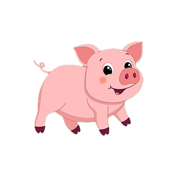
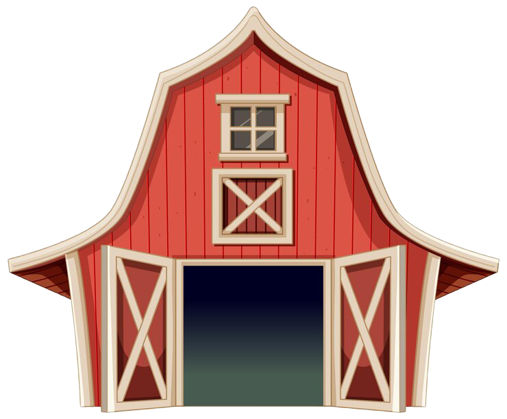
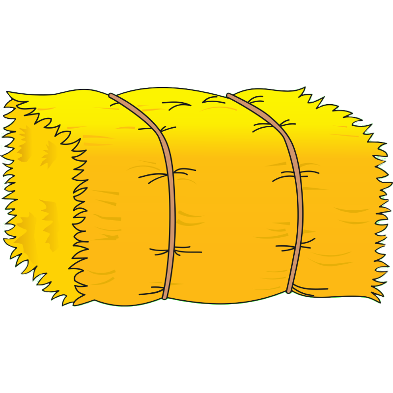
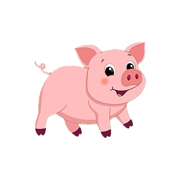
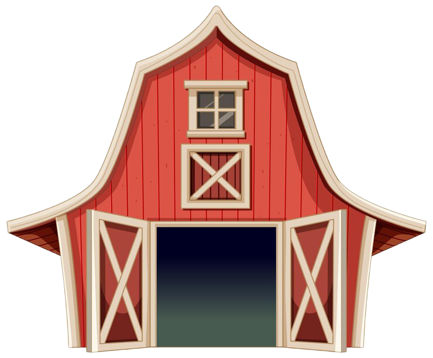
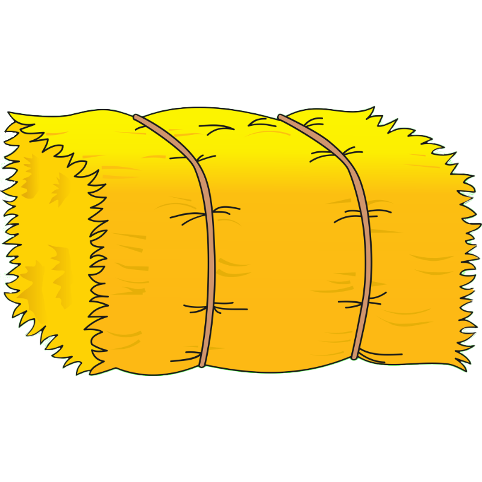


 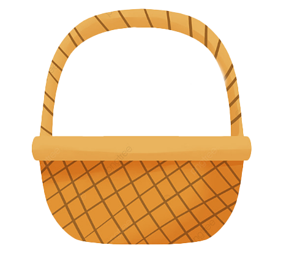
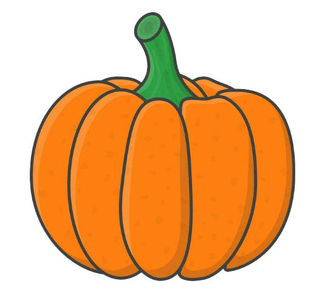
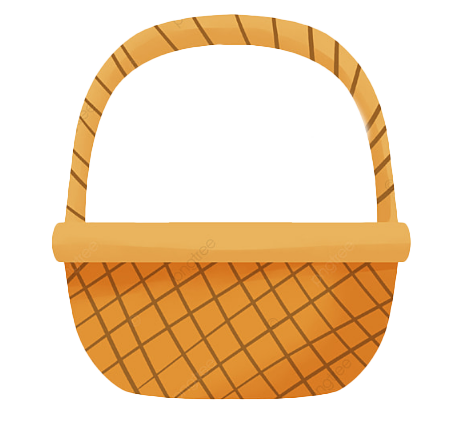
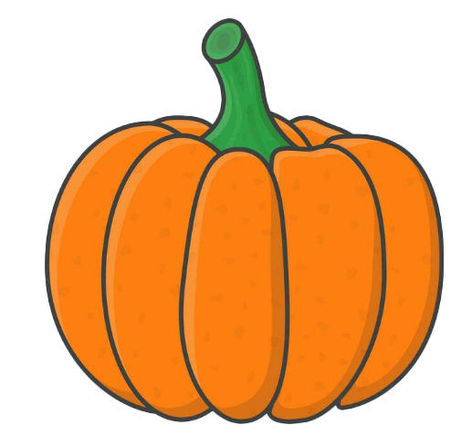


 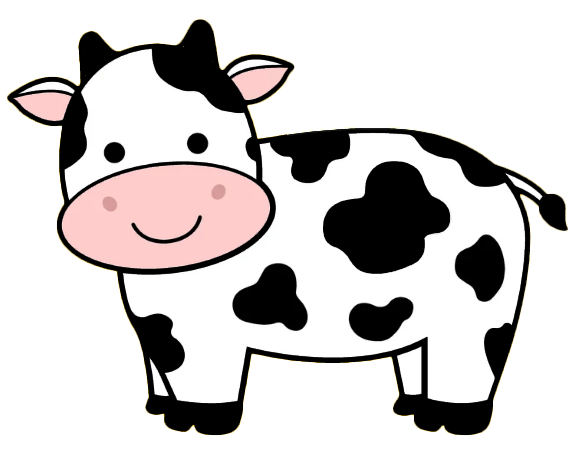
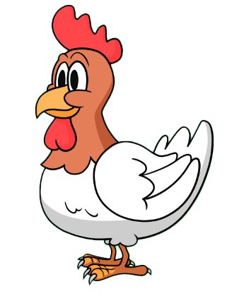
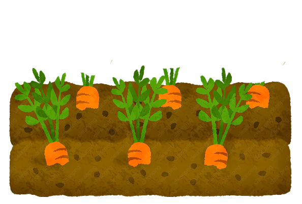
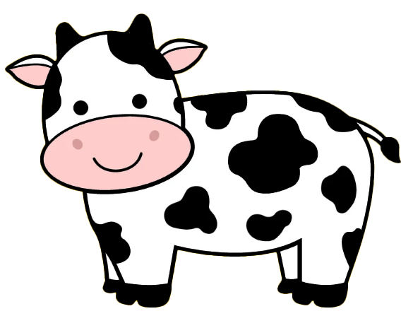
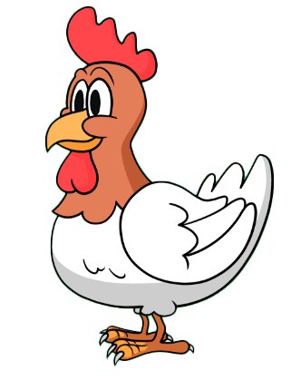
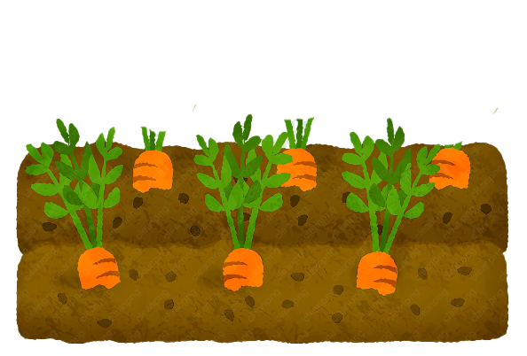
I need to get some work done around the farm.
First, I gather the hay and take it to the cow.
Next, I collect eggs from the chicken coop and place them in the nearby basket.
Then, one by one, I gather the pumpkins from the field and bring them to the pigs.
The pigs are hungry, so they run to the pumpkins and begin to munch right away.
Finally, I grab the watering can from the barn and water the garden so the vegetables can grow.
All the animals are fed, and the farm is taken care of.